مكتبة البيان
How the whole platform works, from the dev stack to the code to the screens. You'll also see the decisions that make it fast, safe and simple to use. Every code excerpt is real code from the repository, with notes explaining it line by line.
github.com/kouteiba97/BookStore20, rue Ernesto Che Guevara · 25000 Constantine
Each chapter starts in plain words: what the part does and why it exists. Then it shows the real code behind it. The code boxes use three visual styles:
// Grey italic: a comment that is already in the source code.const answer = 42; // normal colour = the real codeA gold note is added for this guide only. It explains the line(s) above it in plain words. It is not in the source file.
Excerpts are trimmed to the part that matters. A line with // … means code was skipped. Paths are relative to the repository root, so you can open the file and read the rest.
docs/platform-guide.pdf) explains the features for shop staff and buyers. This guide explains how those features are built.Generated from the repository at commit 749627f (November 2026). The source is docs/guide/technical-guide.html: edit it and print it again to update this PDF.
One API and one database serve four apps. All four are in Arabic (right to left) and share the same green-and-gold identity.
Home page laid out by the admin, instant search, a page for each book, categories, collections (shelves), and orders and book requests that end in WhatsApp. Customers don't need an account.
Orders, counter sales (POS), books, stock, purchases and suppliers, expenses, reports, Excel import and export, social-media export, store settings and packs.
The storefront as a native Android/iOS app. It reads the same public endpoints.
The back office in your pocket. Its standout feature is Quick-Add: photograph a cover, type the title, save, and scan the next book.
| Area | What it does | Where in code |
|---|---|---|
| Catalogue | Books with authors, publishers, category, country, year, price, cost price, gallery, notes. Academic tree (field → year → subject). | books/, academic/ |
| Storefront layout | Admin reorders, renames or hides home blocks, and builds hand-picked shelves. | home-sections/ |
| Leads | "Request a book" form → admin inbox → can become an order. | requests/ |
| Sales register | Website orders, phone orders, counter sales and imported sales in one table. | admin/orders/ |
| Stock | Moves automatically with sales, purchases, returns and imports. Every move is logged. | common/stock/ |
| Invoices | Numbered 2026-0001, with the legal IDs (RC/NIF/NIS/ART), printable. | orders/:id/invoice |
| Money | Suppliers, purchases (stock in), payments and balance, expenses. | admin/money/ |
| Reports | Revenue, cost of goods sold, margin, expenses, net profit, top and slow books, stock value. | admin/reports/ |
| Excel | Import a shop's own spreadsheets (catalogue or sales/purchase/expense history) with preview and undo. Exports. | admin/data-import/ |
| Covers | Upload → normalised JPEG + thumbnail in R2. Matching phone photos to books by OCR. | uploads/, image-sync/ |
| Social content | ZIP of covers + captions + metadata, ready to post. | social-content/ |
| Packs | Starter / Pro / Business: features locked or unlocked, with limits. | common/plan/ |
Every layer is a mainstream, well-documented choice. That keeps the platform easy to hire for, easy to host cheaply, and easy for an AI assistant to work on safely.
| Layer | Technology | Why it was chosen |
|---|---|---|
| Language | TypeScript 6, everywhere on the web | One language for server and browsers. Types catch mistakes (a missing field, a wrong status) before they reach a customer. |
| API framework | NestJS 11 on Express 5 | Gives the server a fixed shape: modules group a feature, controllers receive HTTP calls, services hold the logic, guards decide who may enter. Every feature looks the same, so the code stays readable as it grows. |
| Database | PostgreSQL (Neon in production) | Reliable transactions (a sale and its stock move succeed or fail together), exact Decimal money, and powerful SQL for reports. |
| ORM | Prisma 5 (relationJoins) | The schema file is the single source of truth. Prisma generates typed queries and versioned migrations. relationJoins turns an include into one SQL query instead of one per relation. |
| Validation | class-validator DTOs + global ValidationPipe | Every incoming body is checked and cleaned before any code runs. Unknown fields are dropped (whitelist). |
| Auth | JWT (@nestjs/jwt) | Stateless 30-day admin token. Nothing to store on the server. |
| Hardening | helmet, @nestjs/throttler, CORS allowlist | Security headers, per-IP rate limits, and only known origins may call the API from a browser. |
| Files | Cloudflare R2 (S3 API) + sharp | R2 has no download (egress) fees, so covers are cheap to serve. sharp shrinks phone photos about 20× and strips GPS data. |
| Excel | SheetJS (xlsx 0.20.3 from the official CDN) | Reads .xlsx, .xls and .csv. The CDN build is the patched one; the npm copy is stuck on an old, vulnerable version. |
| OCR | tesseract.js | Reads cover text to match phone photos to books, with no paid API. |
| Web UI | React 19 + Vite 8 | Instant dev reloads and small, hashed production bundles. |
| Styling | Tailwind CSS 4 + Base UI primitives (shadcn style) | Accessible dialogs, menus and focus handling, with styles written next to the markup. RTL works with logical properties. |
| Data fetching | TanStack Query 5 + axios | Caching, background refresh and loading/error states for free. Pages stay simple. |
| Routing | React Router 7 | Pages, redirects, and lazy-loaded admin screens. |
| Mobile | Flutter (separate repo) | One codebase for Android and iOS. Talks to the same API over HTTP. |
| Hosting | Render Blueprint (render.yaml) + Docker | The API, storefront and admin are deployed from one file. Pushing to master redeploys. |
| Tests | Jest + ts-jest | Fast unit tests for the pure business rules: money, stock statuses, parsing. |
Where everything lives. Each top-level folder has one job.
x.module.ts: declares the piecesx.controller.ts: URLs → method callsx.service.ts: the logic and the database callsdto/: shapes of incoming bodies, validated*-rules.ts / *.spec.ts: pure logic + its testsstoreId.Decimal(10,2), rounded to the cent once.moveStock() (or a logged hand adjustment).costPrice.Take a staff member clicking "Confirm" on an order. Here is every stop that click passes through.
Bearer token/api prefixSteps 3 and 6 are configured once, at boot, in main.ts:
app.module.ts is the table of contents of the server. It plugs every feature in, and the order it lists them in matters.
/api/v1/:storeSlug/…GET books, books/:id, search, recommendationsGET home-sections (the home layout)GET academic/… (fields, years, subjects)POST requests (5/min per IP)No login. List endpoints return the slim "card" shape. Only books/:id returns everything.
/api/v1/admin/…POST auth/login (10/min) → JWTEvery controller carries @UseGuards(AdminAuthGuard). The paid features also carry @RequiresFeature(…).
prisma/schema.prisma describes every table. Prisma turns it into SQL migrations and into the typed client that the services use.
| Group | Tables |
|---|---|
| Store | Store (name, slug, plan, legal IDs), StoreCounter (invoice sequence), HomeSection + HomeSectionBook |
| Catalogue | Book, BookImage (gallery), Author/BookAuthor, Publisher/BookPublisher, Category, Country |
| Academic | Field → AcademicYear → Subject, with link tables BookOnField/Year/Subject |
| Stock | Inventory (count + status per book), StockMovement (log of every change and why) |
| Sales | Request (lead), Order, OrderItem |
| Money | Supplier, Purchase, PurchaseItem, Expense |
| Imports | ImportJob: everything an import created is tagged with its id, so the import can be undone |
Authors, publishers, categories, countries and the academic tree are shared reference tables. Everything else belongs to one store through storeId.
The database can hold several stores. Each deployment, though, serves one store, and StoreResolver answers "which one?" quickly.
storeId on every row. To sell to a second shop today, you deploy a second copy pointed at its own store. Running many stores on one deployment needs per-user accounts first (chapter 25).Security is layered: each layer assumes the one before it might fail.
| Layer | What it stops |
|---|---|
| HTTPS + helmet | Eavesdropping, click-jacking, content-type tricks |
| CORS allowlist | Other websites calling your API from a visitor's browser |
| Rate limits | Password guessing (login 10/min), form spam (5/min), scraping and floods (300/min) |
| AdminAuthGuard | Anyone without a valid admin JWT, and a valid token aimed at another store |
| ValidationPipe + query checks | Malformed or oversized input, unknown fields, bad enum values (→ 400, never a crash) |
| storeId on every query | Reading or changing another store's rows |
| Public serializer | Leaking costPrice and other internal fields to the storefront |
| Upload checks | Fake images: the file type is decided by its first bytes, not its name. Decompression bombs are refused. |
| Safe image fetch | Tricking the server into fetching internal addresses (SSRF) |
| Excel export safety | Cells starting with =, +, -, @ are escaped, so an export can't run formulas in Excel |
| Production boot check | The API refuses to start in production without JWT_SECRET |
An order moves through fixed steps. The rules live in a small file with no database code, so they can be tested on their own.
Sales, returns, purchases, purchase cancellations and history imports all change stock through one function. That's why the numbers stay right.
moveStock() inside its transaction. Hand edits on the Inventory screen write an adjustment movement, so they're logged too.An invoice number must be unique, sequential within the year, and must never change once printed. That's what Algerian accounting expects.
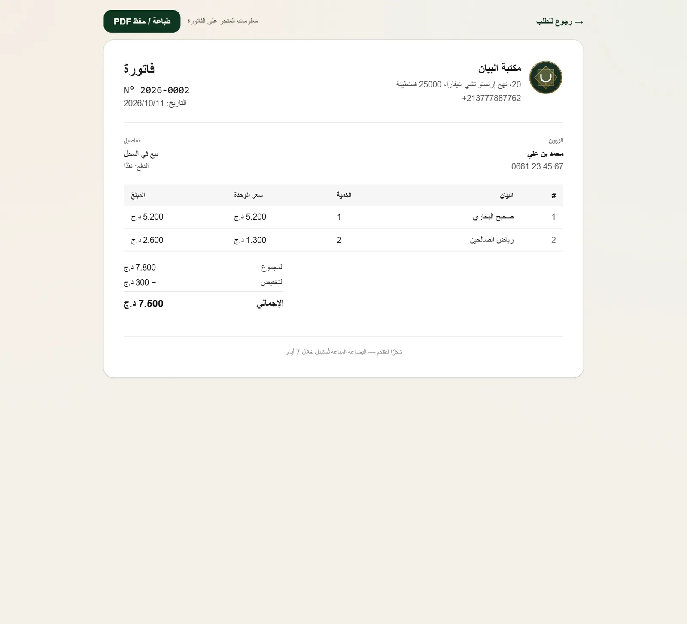
/admin/invoice/:id). It sits outside the admin shell so it prints cleanly on A4 or saves as PDF.The money module records what comes in and goes out. The reports module turns it into the numbers a shop owner actually asks for.
Buying from a supplier adds the books to stock (moveStock 'purchase') and updates each book's costPrice. Payments are recorded against it, so you know what you still owe. Cancelling it removes the stock again.
Rent, salaries, transport, electricity… each with a category, so the report can show where the money goes.
When a book is sold, its current costPrice is copied onto the order line as unitCost. Later purchase prices never rewrite the margin of past sales.
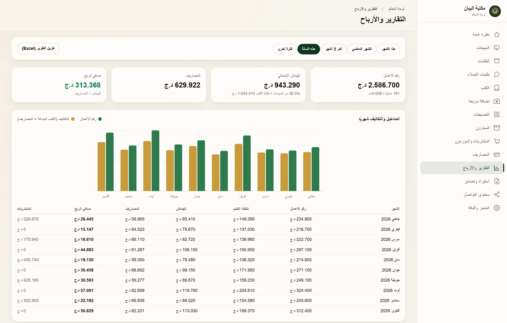
Shops arrive with years of hand-typed spreadsheets. The wizard reads them as they are: Arabic or French headers, prices like «1 500 دج», Arabic-Indic digits, Hijri years.
fields.ts). Kept 30 min in memory.importJobId.Also handled: parseYear turns "1420هـ" (or a bare 13xx/14xx year) into a note instead of a wrong Gregorian year. parseNames splits "ابن تيمية، ابن القيم" into two authors. Dates, payment methods and expense categories are recognised in three languages. Duplicates are found in memory on title + main author, and author/publisher names are resolved in bulk, which is why 5,000 rows import in seconds.
A phone photo is about 1 MB and 3000+ px wide, but a book card shows it about 200 px wide. Each cover is processed once, at upload, so every visitor gets a light, fast image.
POST admin/uploads/coverimage-sync/ matches a folder of phone photos to books by file name + OCRimages/fill looks up missing covers onlinescripts/backfill-thumbnails.ts created thumbnails for older covers (safe to re-run)The platform is sold in three packs. One decorator locks a feature on the server, and one component locks it in the admin.
Customers type احمد for أحمد, and مكتبه for مكتبة. Search has to forgive those variants.
The same function runs on both sides. When a book is saved, its normalised title goes into Book.titleNormalized. When a customer searches, the query is normalised the same way, then matched with contains (case-insensitive) against that column, along with authors and publishers. So both sides are always compared in the same "flattened" spelling. scripts/perf/explain.ts shows the database plan for this query.
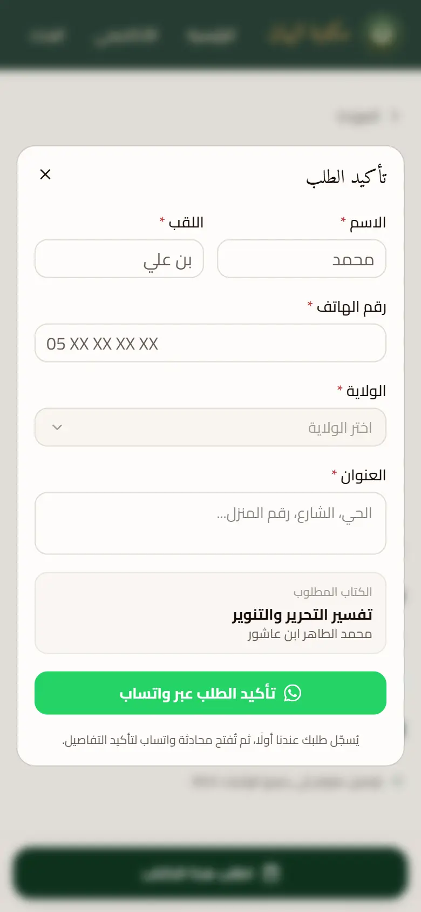
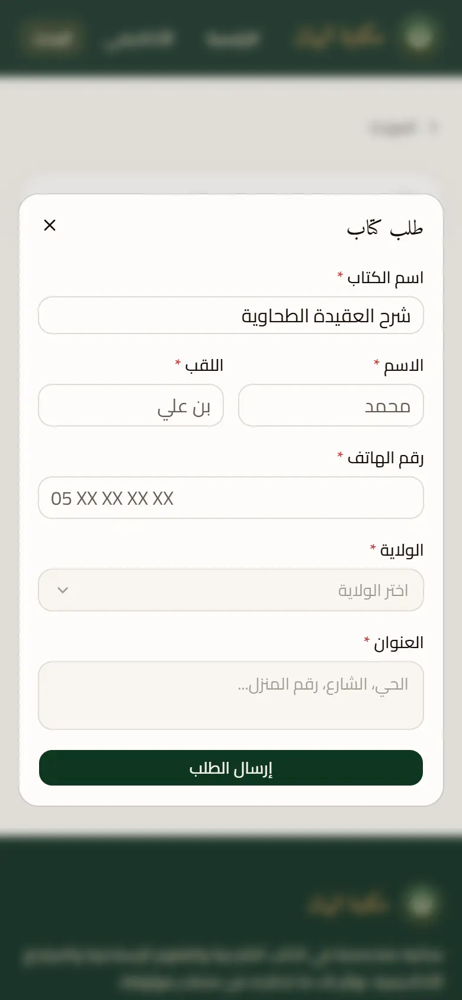
frontend/: what customers see. It's built for speed on a mid-range phone with a weak 4G signal.
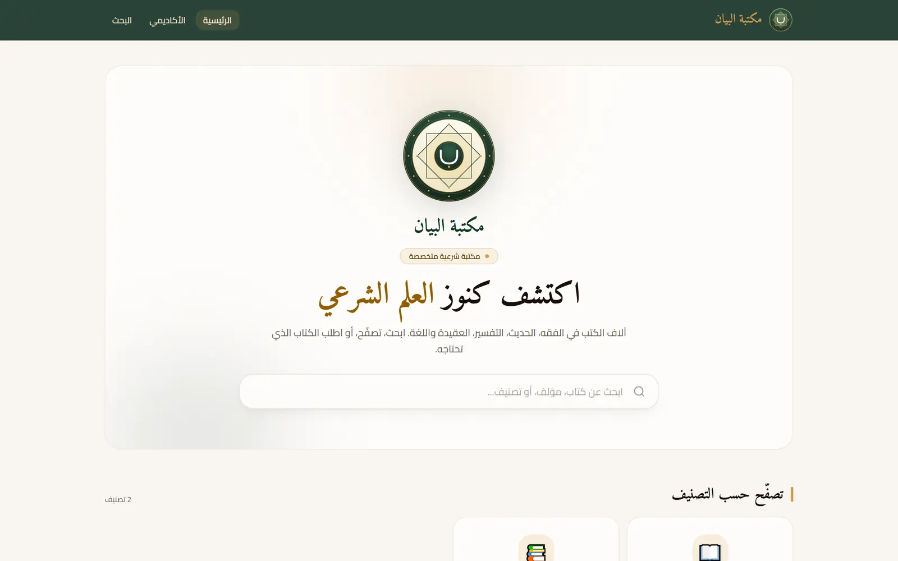
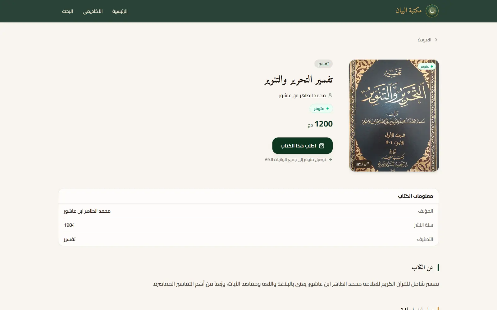
| Page | What it does |
|---|---|
home.tsx | Fixed search hero, then the blocks from GET /home-sections: categories, latest, popular, request form, and hand-picked shelves. |
search.tsx | Instant results by title, author and publisher, with Arabic normalisation. |
book.tsx | Full book: gallery, description, extra info, stock status, order and request dialogs. |
collection.tsx | A shelf's «عرض الكل» (see all) page. |
academic/* | Field → year → subject → books (full edition only). |
bookCardInclude). Home asks for 16 books, not the whole catalogue.components/lazy-dialogs.tsx, never directly. A direct import would pull the heavy code back into the first page load.admin/: a separate Vite app served under /admin/. It's deployed on its own, so customers never download back-office code.
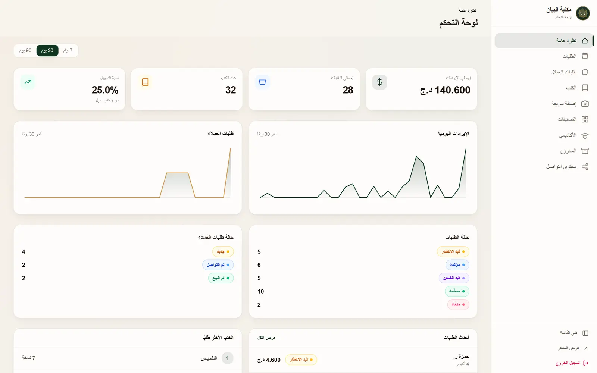
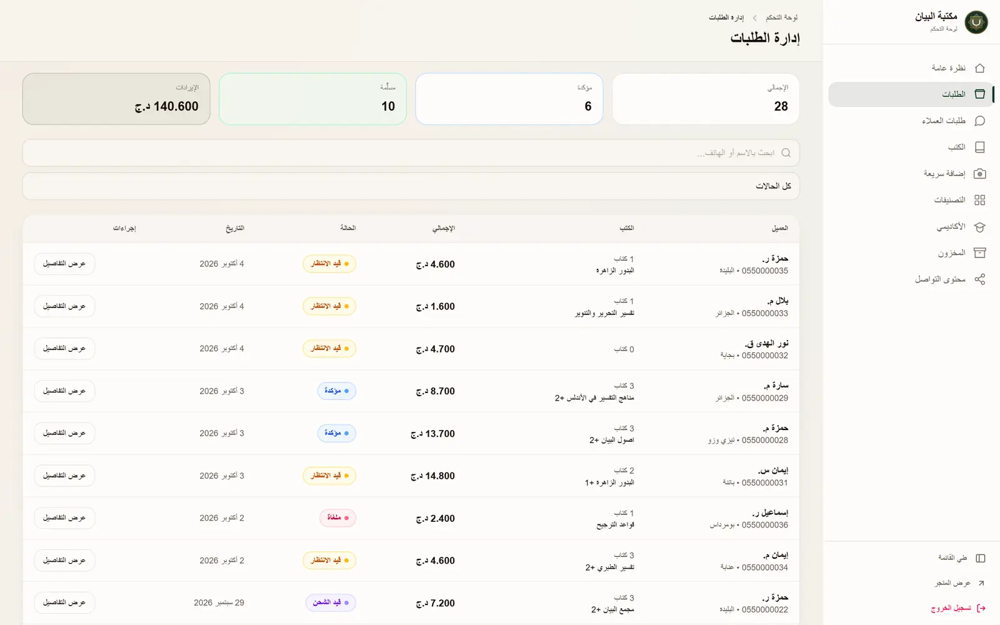
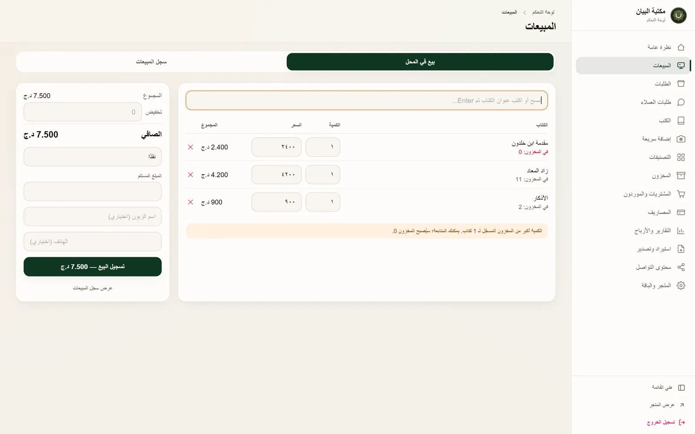
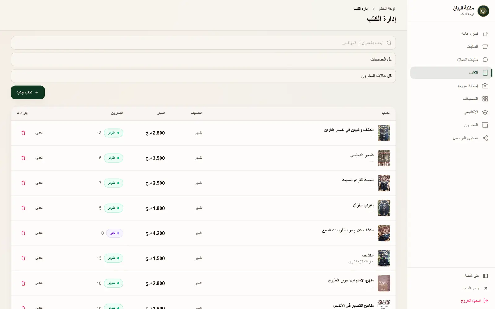
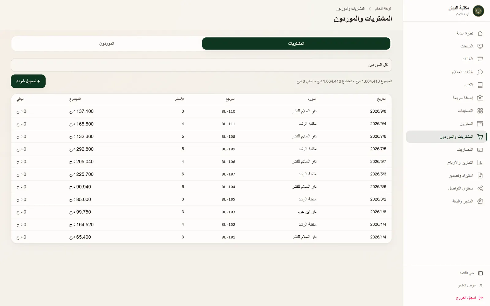
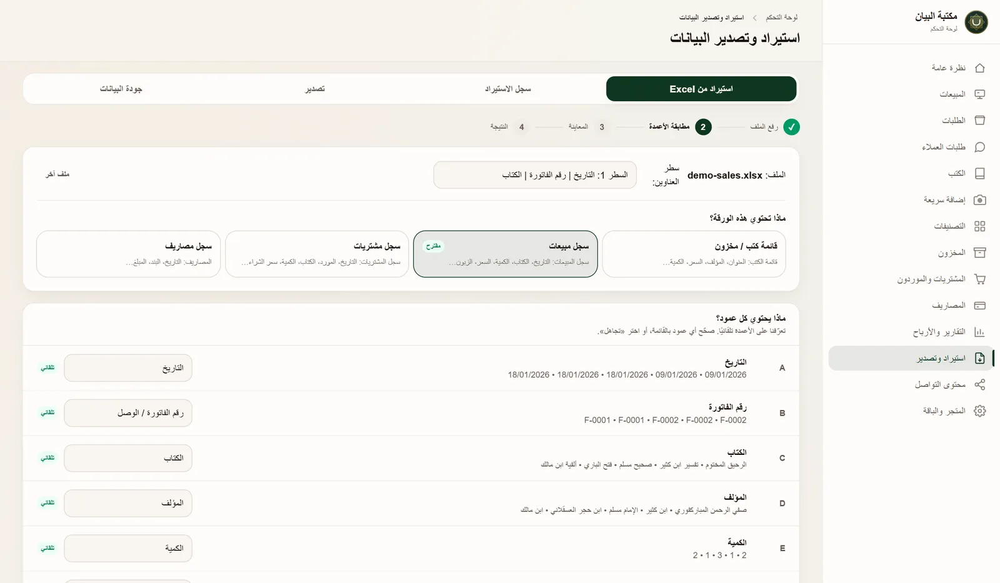
| Screen | Purpose | Pack |
|---|---|---|
| overview | Key numbers, recent orders, alerts | all |
| orders / order-detail | Status workflow, edit lines, discount, print invoice, return | all |
| requests | Customer leads → convert to an order, or delete spam | all |
| sales | Counter POS + the register of all sales | all |
| books / quick-add | Catalogue CRUD, gallery; fast entry on a phone | all |
| catalog | Authors, publishers, categories (with book counts) | all |
| inventory | Stock counts, statuses, movement history per book | all |
| storefront | Arrange the home page: reorder, rename, hide blocks; build shelves | all |
| data | Import wizard, history + undo, exports, data-quality report | all history: Business |
| purchases / expenses | Suppliers, stock in, payments, balance; shop expenses | Pro+ |
| invoice | Printable numbered invoice | Pro+ |
| reports | Profit and loss, margins, top and slow books, Excel export | Pro+ |
| social-content | Pick books → ZIP of covers + captions for Instagram/Facebook/TikTok | Pro+ |
| academic | Fields, years, subjects (full edition) | Pro+ |
| settings | Store identity for invoices; current pack | all |
Every admin page is React.lazy in App.tsx, so opening "Orders" doesn't download the code of "Reports". Data comes through TanStack Query hooks, which cache results and refresh them in the background. After a change, the related queries are refreshed, so lists update without a reload.
They live in a separate repository (BookStoreMobile) and are the native twins of the two web apps. They use the same palette, fonts, logo and Arabic RTL layout, and they call this same API over HTTP. The backend doesn't care which app is calling.
Browse, search, book page, order and request. Uses GET /books without limit to load the catalogue.
JWT login, the orders and requests workflow, and Quick-Add: camera → cover uploaded to R2 → title + category → "save & scan next".
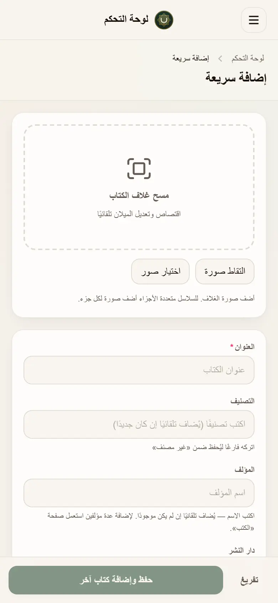
The same code builds two products. basic is the build for مكتبة البيان. full is the complete platform you sell to other stores. Hidden features stay in the code and the database; only the menus and pages are switched off.
render.yaml describes all three services. Pushing to master redeploys them.
| Service | How it runs |
|---|---|
| bookstore-api | Docker (Node 22). Two-stage build: compile, then copy only runtime packages. Runs prisma migrate deploy on boot. Health check /api/v1/health. |
| bookstore-storefront | Static site from frontend/dist. Hashed assets cached for a year. |
| bookstore-admin | Static site from admin/dist, base /admin/. |
| Database | Neon PostgreSQL: a pooled URL for the app, a direct URL for migrations. |
| Secrets | Entered once in the Render dashboard (sync: false). JWT_SECRET is generated by Render and never shown. |
| Script | Use |
|---|---|
scripts/setup-store.ts | Set the store's name, slug and identity |
scripts/set-plan.ts | Change a store's pack (starter / pro / business) |
scripts/backfill-thumbnails.ts | Create missing 480 px thumbnails (safe to re-run) |
scripts/migrate-covers-to-r2.ts | Move old local covers into R2 |
scripts/perf/* | Seed a throwaway N-book store, benchmark endpoints, explain search. Local only. |
The riskiest logic (money, stock statuses, parsing user files) is written as pure functions, with no database and no framework, so it can be tested in milliseconds.
| Test file | What it proves |
|---|---|
orders/order-rules.spec.ts | Allowed and refused status moves; totals, discount clamping, rounding |
reports/money-logic.spec.ts | Margins, COGS, purchase balances |
data-import/data-import.spec.ts | Header recognition, «1 500 دج», "1.500,00", Hijri years, name splitting |
utils/normalize-arabic.spec.ts | Alif/hamza, taa marbuta, tashkeel |
utils/cover-image.spec.ts | Resize, thumbnail naming, thumbUrl rules |
utils/export-safety.spec.ts | Excel formula injection is neutralised |
Status today: 6 suites and 151 tests, all passing. The TypeScript build is clean. npm audit reports 0 known vulnerabilities on the API after the November 2026 patch (body-parser, multer, qs).
These are the principles that show up again and again in the code, and the reason a small shop can trust it with its money.
Stock changes only through moveStock(). Money is computed only in computeOrderTotals(). A sale is defined once (SOLD, SALE_DATE). Numbers can't drift apart between screens.
A sale, its stock move and its log are one transaction. A crash halfway leaves nothing half-done.
Conditional updates (where: { status: old }, invoiceNumber: null) and atomic SQL mean two clicks or two cashiers never sell or number twice.
Orders copy the customer, prices and unit cost. Changing a price today never rewrites last year's invoices or margins.
Every stock change has a reason and a link. Every import is tagged and can be undone. A return is a normal, logged status change.
Arabic-first RTL, Algerian number formats, 69 wilayas, WhatsApp ordering, legal IDs on invoices, Hijri years, French/Arabic Excel headers.
Thumbnails, slim list responses, one SQL query per read, caches, code split on demand, year-long asset caching, a free plan that never sleeps.
Fails closed, filters by store everywhere, hides cost prices, rate-limits, blocks SSRF and formula injection, strips GPS from photos.
Catalogue and orders export to Excel in every pack. Leaving the platform is never a trap, and that's a selling point.
Editions (build time) and packs (per store) let the same code serve مكتبة البيان and be sold to other shops.
The same module shape everywhere. Comments explain why, not what. Pure rule files with tests. Files are small and named for what they do.
Render free tier, Neon, R2 with no egress fees. The whole platform can run for almost nothing until sales justify more.
Where the platform has been, where it stands in November 2026, and the next steps in the order they make sense.
Catalogue, academic tree, storefront, requests via WhatsApp, admin dashboard, JWT auth, R2 covers, mobile apps, production hardening (rate limits, tenancy, helmet), social export.
Excel wizard (analyze → preview → commit → report → undo), exports, data-quality report.
Suppliers, purchases, payments, expenses, counter POS, one sales register, numbered invoices, returns.
Profit and loss per month, COGS from frozen costs, margins, top and slow books, stock value, Excel export.
Starter / Pro / Business, server and UI gating, limits. Then: admin-arranged home page and hand-picked shelves, deleting requests, and the security patch (Nov 2026).
master into develop so both branches match again.shadcn CLI to devDependencies in admin/ and frontend/ (clears most build-tool audit warnings).facebook/ brand images; add .DS_Store to .gitignore.store_app: render the hand-picked shelves from /home-sections.admin_app: money (purchases, expenses), reports, pack gating, deleting requests.ADMIN_PASSWORD, with roles and who-did-what in the logs.storeId already on every row.KEEP_AWAKE=false).| Term | Meaning |
|---|---|
| API | The server program the apps talk to. It receives requests, applies rules, reads and writes the database, and answers in JSON. |
| Endpoint / route | One address of the API, e.g. GET /api/v1/admin/orders. |
| Module / controller / service | NestJS building blocks: a feature folder, its URL handlers, and its logic. |
| DTO | "Data transfer object": a class describing what a request body must look like. Used for validation. |
| Guard | Code that runs before a route and decides whether the request may continue (login, pack). |
| Decorator | The @Something() labels on classes and methods that attach behaviour (routes, guards, validation). |
| ORM / Prisma | The library that turns typed TypeScript calls into SQL and keeps the schema in versioned migrations. |
| Migration | A saved SQL change to the database structure, applied in order on every environment. |
| Transaction | A group of database writes that all succeed or are all cancelled together. |
| Atomic | Happens as one indivisible step; nobody can see or interfere with a half-done state. |
| JWT | "JSON Web Token": a signed pass the server gives at login and checks on every admin request. |
| CORS | Browser rule deciding which websites may call the API. |
| Rate limit | A maximum number of requests per minute per visitor. |
| SSRF | "Server-side request forgery": tricking a server into fetching an internal address for an attacker. |
| COGS | Cost of goods sold: what the sold books cost you to buy. |
| Tenancy / storeId | Keeping each store's data separate in a shared database. |
| Thumbnail | A small version of a picture for lists and cards. |
| Bundle / code splitting | The JavaScript files a browser downloads; splitting means downloading parts only when needed. |
| TanStack Query | Front-end library that fetches, caches and refreshes server data for the pages. |
| Edition / pack | Edition = which product the app was built as (basic/full). Pack = what a given store pays for. |